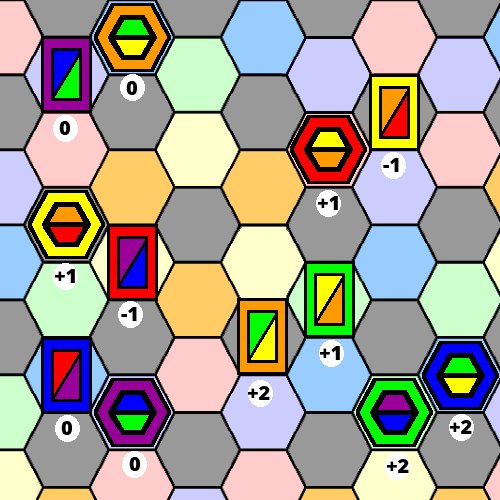
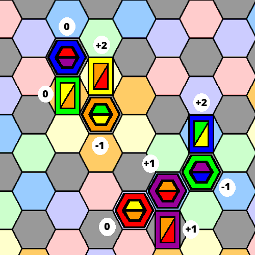

When two (or more) pieces are side by side a melee is formed. The health of all pieces is recalculated on every move during
a turn. Any piece with a negative health is due to be captured at the end of the turn. Such a piece changes color to grey.
As further pieces are added to a melee, a grey piece due to be captured, may recover it's health and have it's color
restored. Just as a reminder:
A piece is said to be "flying" a colour if that colour is one of the two colours shown on the current top face.
A piece is said to be "empowered" if it stands on a hexagon of it's own body colour.
This section shows how the health algorithm works and the following sections give a few example melees.
Consider two pieces side by side. There is just one common edge / border. Here is the logic table for calculating the health
for each piece. Since a hexagon has six sides, and each conflict is bidrectional, up to twelve contributing factors from this
logic table may be added together to determine the health of a particular piece, according to how many other pieces are adjacent.
Supporting Friend
Fiendish Foe
Flying My Colour
Not Flying My Color
Flying My Color
Not Flying My Color
Empowered
Not Empowered
Empowered
Not Empowered
+2
+1
0
-2
-1
0
(NB The health of a piece is governed by all the other adjacent pieces, as well as it's own flying colours
and possible empowerment.)
Yellow Cylinder = +1 ... flying the red colour to attack
Red Block = -1 ... flying the wrong colours, -1 for attack by yellow cylinder
Blue Block = 0 ... +2 for flying and empowered, but -2 for attack from purple cylinder
Purple Cylinder = 0 ... +2 for flying and empowered, but -2 for attack from blue block
Yellow Block = -1 ... +1 for flying the correct colours, but -2 for empowered attack from red cylinder
Red Cylinder = +1 ... + 2 for flying and empowered, but -1 for attack from yellow block
Orange Block = +2 ... supported by flying and empowered green block
Green Block = +1 ... supported by flying orange block
Green Cylinder = +2 ... supported by flying and empowered blue cylinder
Blue Cylinder = +2 ... supported by flying and empowered green cylinder

Assuming this scenario was the result of the cylinders turn, the health algorithm would have been repeatedly executed.
The red block and the yellow block would have become grey, indicating that they have been captured. Once the turn ends,
the captors, namely the yellow and red cylinders would gain an extra move. Meanwhile, the captives return to their home
positions and the score is updated accordingly.
10) Combat Example 2
Blue Cylinder = 0 ... blue cylinder flying the wrong colours
Yellow Block = +2 ... +2 for empowered attack on orange cylinder, +1 from green block support, -1 from orange cylinder
Green Block = 0 ... +1 for attack on orange cylinder, -1 from orange cylinder
Orange Cylinder = -1 ...+1 for attacking green block, +1 for attacking yellow block, -2 from yellow block, -1 from green block
Blue Block = +2 ... +2 for empowered attack on green cylinder
Green Cylinder = -1 ... +1 for attacking blue block, but -2 from empowered blue block
Purple Cylinder = +1 ... +1 from green cylinder
Red Cylinder = 0 ... +1 from supporting purple cylinder, but -1 from purple block
Purple Block = 1 ... +1 for attacking red cylinder

Assuming this scenario was the result of the blocks turn, the health algorithm would have been repeatedly executed.
The orange cylinder and the green cylinder would have become grey, indicating that they have been captured. Once the turn ends,
the captors, namely the green, yellow and blue blocks would gain an extra move. Meanwhile, the captives return to their home
positions and the score is updated accordingly.
11) Captors and Captives
As before, the algorithm computes the health of each piece. With this scenario at the end of a turn, there are two captives
and three captors. Both the blue block and the yellow cylinder are captured, they would become grey during the turn. At the
end of the turn both would return to their home positions. However, only one side gets to claim the extra move(s) assoicated
with being a captor. In this example, if this scenario was created by the ...
Cylinder Player ... then the yellow cylinder may make an extra move from it's home position.
Block Player ... then the blue block may make an extra move from it's home position and the orange block may
may make an extra move from it's current position.